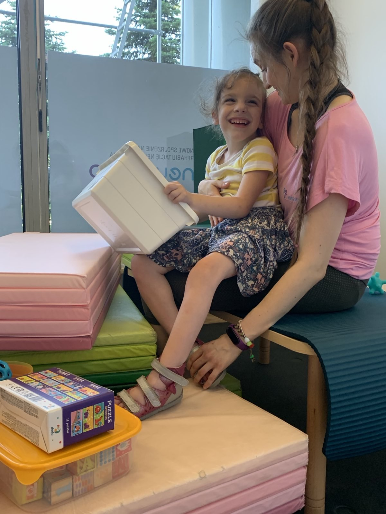
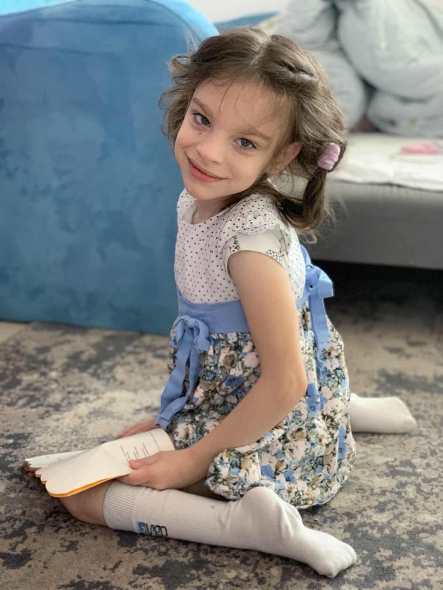

O Marysi
Marysia przyszła na świat jako wcześniak. Jej start był trudny — pierwsze tygodnie spędziła na oddziale neonatologii, otoczona czujną opieką lekarzy. Ale od samego początku pokazywała charakter i wolę walki.
Dziś Marysia jest uśmiechniętą, ciekawą świata dziewczynką. Uwielbia muzykę — gra na pianinie i śmieje się przy każdej melodii. Kocha książki, zabawę i kontakt z ludźmi. Każdy jej sukces — nawet ten najmniejszy — jest dla nas ogromną radością.

Na co dzień Marysia potrzebuje intensywnej rehabilitacji neurologicznej i terapii. To ciężka praca — zarówno dla niej, jak i dla terapeutów — ale efekty widać z każdym tygodniem. Marysia porusza się na wózku, co nie przeszkadza jej odkrywać świata na własnych zasadach.
Zebrane środki z 1,5% podatku i darowizn pokrywają koszty rehabilitacji, terapii i specjalistycznego sprzętu. Dzięki Waszemu wsparciu Marysia może się rozwijać i walczyć o każdy kolejny krok.

Dziękuję, że jesteś z nami — każde przekazane 1,5% to dla nas znak, że nie jesteśmy
sami.
— Adrianna, mama Marysi